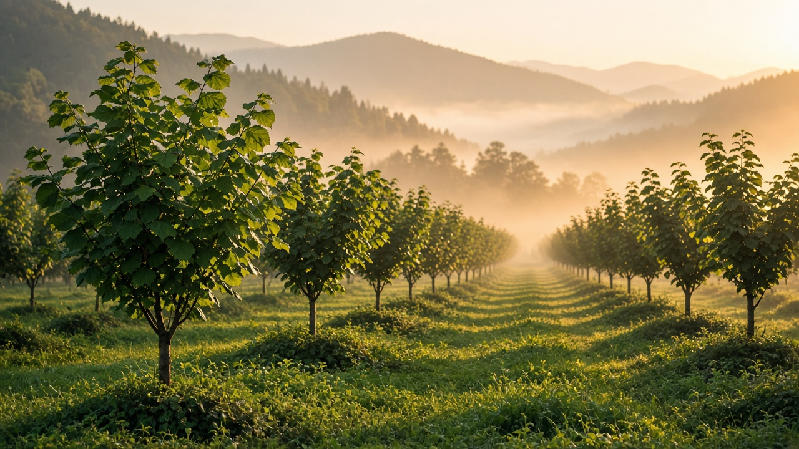
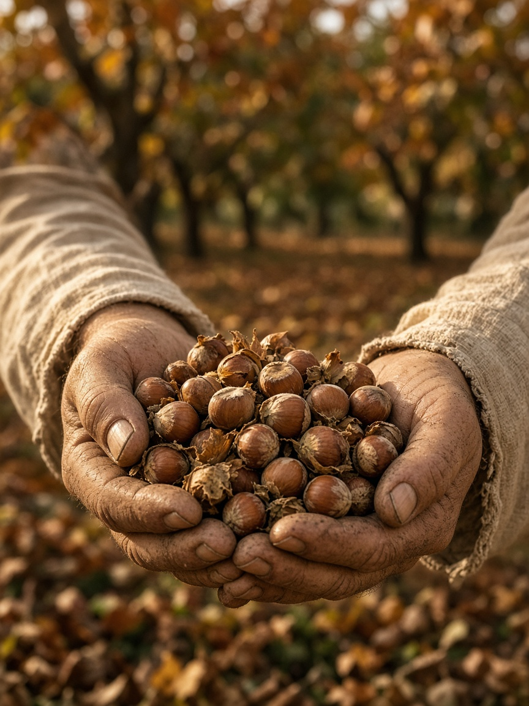
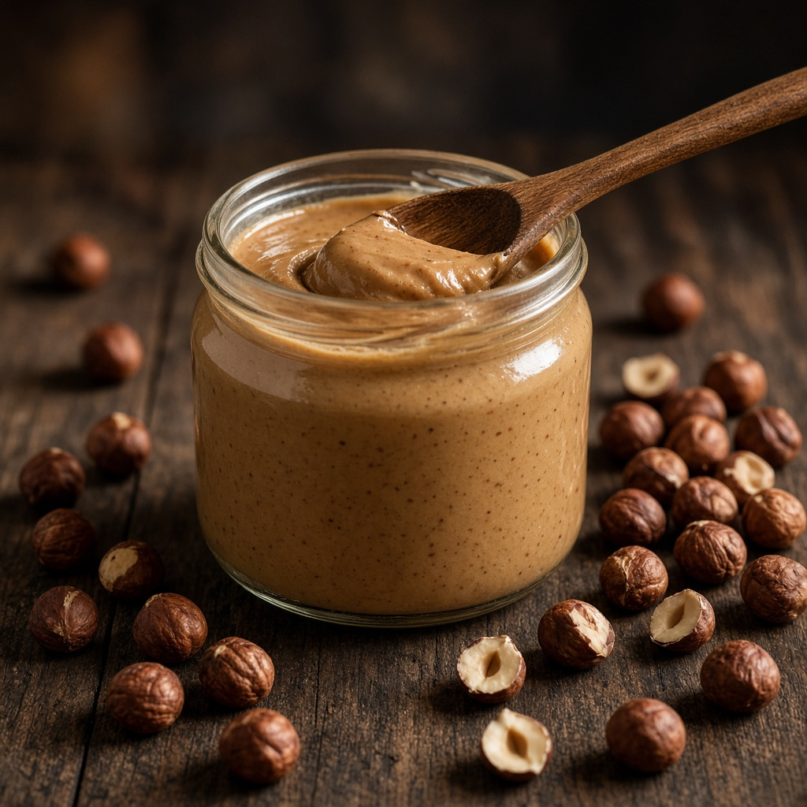

Екологічно
Не використовуємо синтетичні пестициди та мінеральні добрива. Міжряддя засіяні травами, ґрунт мульчуємо, а запилювачам залишаємо квітучі смуги.

Екологічний фундуковий сад на 150 дерев. Ми вирощуємо фундук повільно й дбайливо — і запрошуємо вас стати власником одного з дерев.

Ліщина — це не ферма й не конвеєр. Це сад на сто пʼятдесят дерев на Покутті, де ми знаємо кожне з них.
Фундук (ліщина велика) відомий в Україні давно, а Прикарпаття з його м’яким кліматом і помірними вологими літами — одне з найкращих місць для нього. Наш сад розташований поблизу Снятина, на пагорбах над долиною Пруту.
Ми свідомо залишилися малими. Це дає змогу доглядати за деревами вручну, не поспішати зі збором і переробкою та зберігати смак, якого не знайти в магазинному фундуку: насичений, маслянистий, трохи солодкуватий.
— Родина саду «Ліщина»
Не використовуємо синтетичні пестициди та мінеральні добрива. Міжряддя засіяні травами, ґрунт мульчуємо, а запилювачам залишаємо квітучі смуги.
Обрізка, збір і сушіння — з повагою до природного ритму. Горіх висихає природно, а не на швидкому гарячому повітрі, тому зберігає олії й аромат.
Ви можете побачити, звідки ваші горіхи: у нас є фото кожного дерева, а двері саду відчинені для гостей — за попереднім записом.
Сад змінюється щомісяця — і так само змінюється те, що ви отримуєте у своїй підписці.



Фундук цвіте першим — ще за снігу. Жовті сережки розносять пилок вітром, і саме цієї пори закладається майбутній урожай.
Дерева набирають силу, на гілках зав’язуються горіхи у зелених «обгортках». Ми доглядаємо за міжряддями й чекаємо.
Горіхи опадають самі — ми збираємо їх вручну, сушимо й сортуємо. Тут сад показує все, що вмів весь рік.
Час переробки: чищений фундук, паста, горіхи в шоколаді та подарункові набори — і адвент-календар до свят.
Снятин — старовинне місто над Прутом, на межі Покуття й Буковини. Сад розташований поруч, у тихій місцевості з чистим повітрям і виглядом на Карпатські передгір’я.
Ідеальний подарунок на день народження, весілля, народження дитини чи просто «дякую». Не річ, а історія, що триває цілий рік.
Обране дерево отримує імʼя та ярлик із фотографією. Протягом року власник отримує фундук і вироби з нього: чищені горіхи, горіхи в шоколаді, фундукову пасту, а до зими — адвент-календар.

Ми радо покажемо дерева, пригостимо горіхами та розкажемо, як усе росте. Домовтеся про візит заздалегідь.
Контакти й адреса →